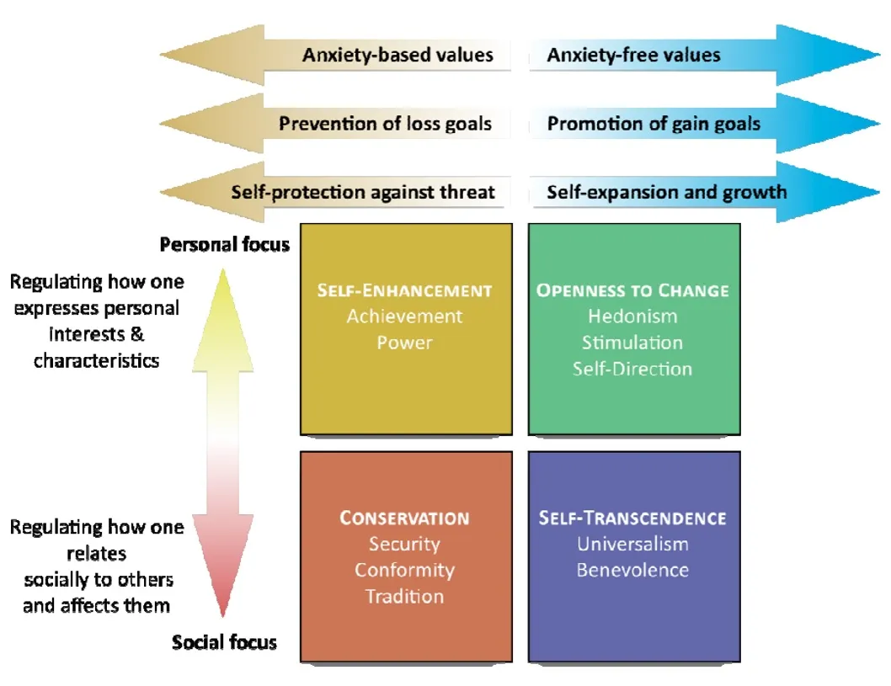
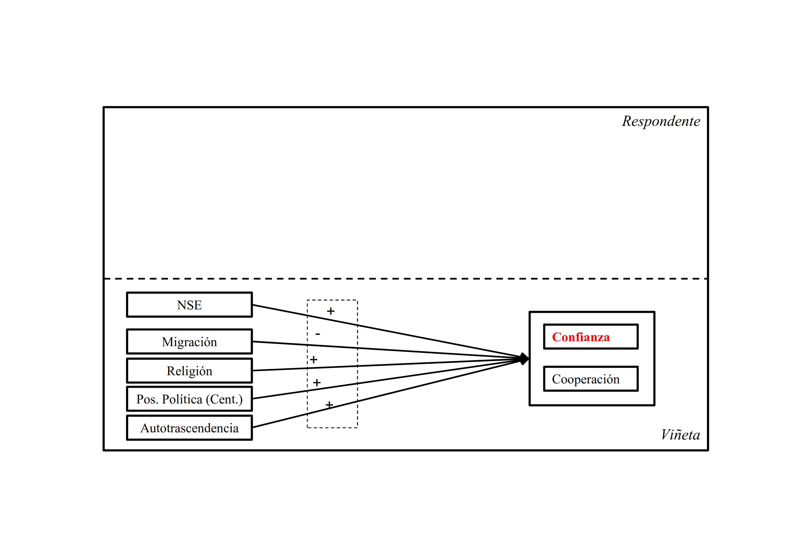
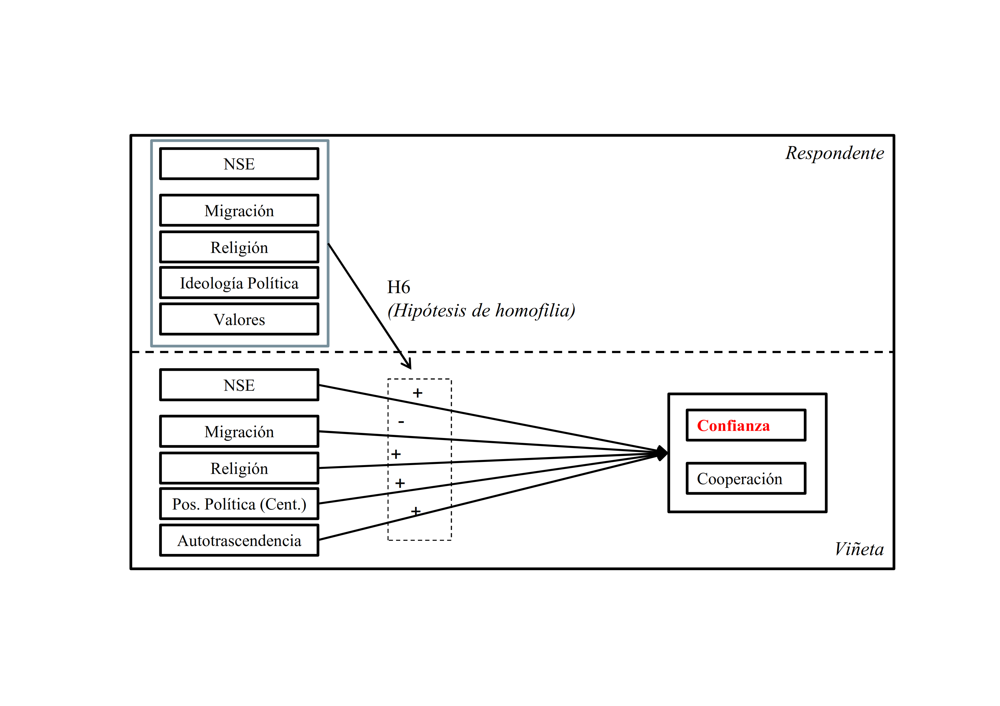
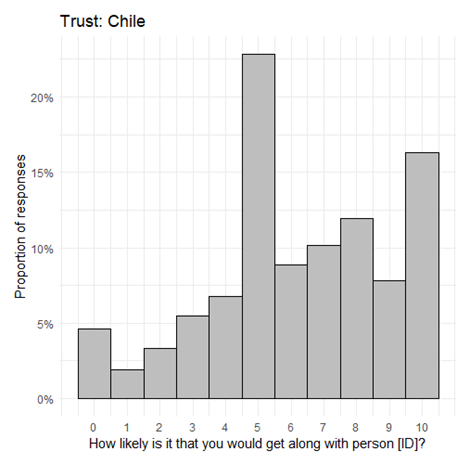
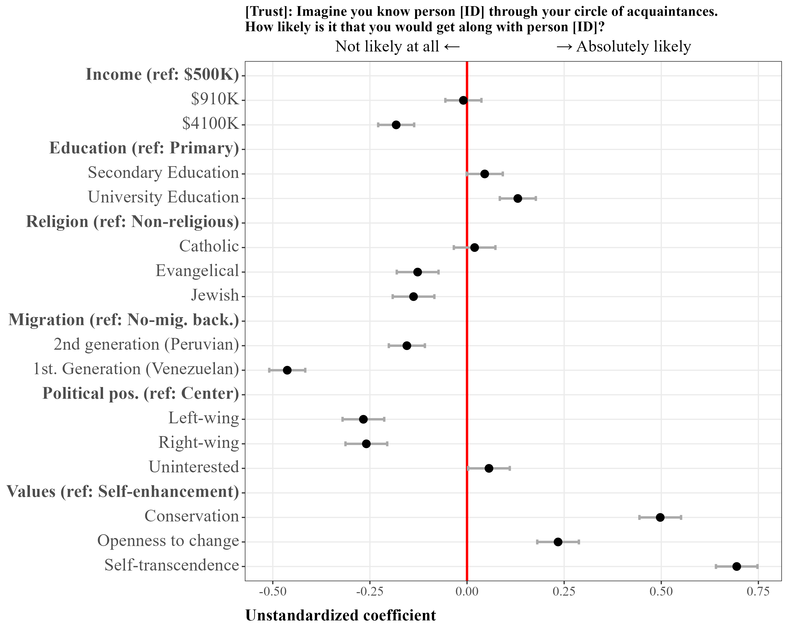

Ties that bond: A Factorial Survey Experiment on Social Cohesion and Group Composition in Chile.
Julio Iturra-Sanhueza1,2 (coauthorship: Juan Carlos Castillo & Olaf Groh-Samberg)
1Bremen International Graduate School of Social Sciences, University Bremen
2Research Center Social Cohesion - RISC
Supervisors:
Dr. Patrick Sachweh (U. Bremen)
Dr. Olaf Groh-Samberg (U. Bremen)
Dr. Simone Schneider (U. Pompeu Fabra)
Seminario Redes, clases y actitudes políticas - 11 December 2025, Santiago de Chile
Sin la confianza general que las personas tienen entre sí, la sociedad misma se desintegraría, ya que muy pocas relaciones se basan enteramente en lo que se sabe con certeza sobre otra persona, y muy pocas relaciones perdurarían si la confianza no fuera tan fuerte como, o más fuerte que, la prueba racional o la observación personal. (Traducción propia)
Simmel, G. (2011, [1900]). The philosophy of money.
Context
PhD dissertation
BIGSSS - GloWel - Global Inequality, the Middle Classes and the Welfare State” (DAAD)

Study 1: Iturra-Sanhueza, Julio. 2025. “Class-Based Network Segregation, Economic Inequality, and Redistributive Preferences across Societies.”” European Sociological Review, November 24, jcaf048. https://doi.org/10.1093/esr/jcaf048.
Study 2: Iturra-Sanhueza, Julio. 2025. “More Diverse, More Skeptical? How Changes in Class-based Network Diversity Shape Public Support for Commodified Welfare Services: Longitudinal Evidence from Chile”. Under review
Study 3: Iturra-Sanhueza, Julio, Castillo, Juan Carlos, Groh-Samberg, Olaf. “Ties that bond: Factorial Survey Experiment on Social Cohesion and Group Composition in Chile”. Working paper (Collaboration COES, Chile and FGZ-RISC, Germany)
More info: https://github.com/phd-bigsss
Theoretical perspectives on social cohesion
Social Cohesion
- It can be understood as a state of affairs relating to interactions: vertical (between the state and its citizens and organizations) and horizontal (between individuals and groups in society).
(..) characterized by a set of attitudes and norms that include trust, a sense of belonging, and a willingness to participate and help, as well as their behavioral manifestations (Chan et al., 2006).
- Identifying shared and (i) conflicting interests, (ii) goals, and (iii) values leads to the identification of opportunities for cooperation motivated by bonds of trust and support within your local or national community.(Green & Janmaat, 2011).
Theoretical perspectives on social cohesion
Cohesion between and within groups
Additionally, these attitudinal and behavioral expressions contribute to the formation of social groups :
(…) defined by a combination of socioeconomic position (vertical stratification) and shared cultural values (horizontal value space) (Groh-Samberg et al., 2023)
From this perspective, individuals are integrated into social groups, and these are integrated (more or less) into society.
Internal cohesion: similarity can promotes trust, consensus, and cooperation.
Intergroup cohesion: existence of ties between groups and institutions that mediate and contain value or economic conflicts.
Promoting and inhibiting forces of social cohesion
Socioeconomic domain
Economic inequality can be “corrosive” to social cohesion (Delhey et al., 2023). As individuals are set apart by economic distance this breeds greater social distance, reduce chances of encounter and knowing others’ world views (Otero et al., 2022).
Socioeconomic differences can draw symbolic boundaries of “respectability” and “distinction”(Groh-Samberg et al., 2023, p. 315) associated with lower trust in others(Diprete et al., 2011).
Advantaged positions are associated with lower perceived risks in exchange situations, which would explain a greater willingness to trust others (Fiske & Markus, 2012).
As cooperation partners, people with high SES (education and income) are perceived as more competent, in contrast to individuals with lower SES (Salgado et al., 2021)
Promoting and inhibiting forces of social cohesion
Sociocultural diversity domain
Sociocultural diversity defined by differences in ethnic, religious, or national origin can tension social cohesion (Baldassarri & Abascal, 2020).
Migrants may be perceived as an economic threat, associated with increased perceived labor or cultural competition, linked to the loss of national identity (Castillo et al., 2023). However, positive contact experiences are also linked to lower prejudge towards migrants (Hewstone, 2015)
Religiosisty can also be perceived as a symbol of adherence to social norms and values (Rowatt & Al-Kire, 2021). Religious people may be perceived as slow planners, non-impulsive, and more trustworthy than non-religious people (Moon et al., 2018).
Promoting and inhibiting forces of social cohesion
Value domain
- Societies with greater degree of shared values show higher levels of social trust, suggesting that common goals are promoted by similarity in human value orientation (Beilmann & Lilleoja, 2015).
They function as evaluation criteria, so certain value profiles can promote or inhibit cohesion (Groh-Samberg et al., 2023).
Values transcend specific actions and situations. Distinguishing them from norms and attitudes that usually refer to specific actions, objects, or situations (Schwartz, 1992)
- According to the theory of basic human values (Schwartz, 1992), values can be divided into four conflicting higher-order values
Promoting and inhibiting forces of social cohesion
Political Domain
Political positions affect social evaluations while political identity determines perceptions of trustworthiness and openness to reciprocity (Groh-Samberg et al., 2023).
Political division highlights evaluations based on group membership. For example, individuals evaluate positions on a left-right spectrum that traces the identities of political groups (Hernández-Lagos & Minor, 2020).
In contrast to the borders of the political spectrum, centrists are often seen as more moderate, open to compromise, and less extremist, making them more accessible to people from diverse political backgrounds (Hernández-Lagos & Minor, 2020)
How do the characteristics of social groups affect social cohesion?
This Study


Methods
Factorial survey experiment
Research design: A vignette factorial study is used to explore how specific characteristics of fictional subjects (vignettes) influence the assessments of external observers.
Vignette design:
- Each vignette includes attributes such as demographic or socioeconomic characteristics (e.g., gender, income).
Respondents evaluate these vignettes based on the attributes provided (details on next slide).
Administration: To ensure manageable data collection, each respondent evaluates a limited number of vignettes.
Vignettes dimensions
Factorial universe: 2x3x3x4x3x3x3x4x4 representing a factorial universe of 31,104 possible combinations (impossible to evaluate).
Two steps (D-efficient algorithm in SAS):
- Optimal selection of vignettes (144)
- Organized in blocks (15)
- 9 to 10 vignettes per block
| Dimension | Label | Description (Chile) |
|---|---|---|
| Education | Low | Finished primary school |
| Medium | Finished high school | |
| High | Obtained a university degree | |
| Income | Low | $500.000 |
| Medium | $910.000 | |
| High | $4.100.000 | |
| Migration background | No migration background | Born in Chile, of Chilean parents. |
| 2nd generation | Born in Chile, of Peruvian parents. | |
| 1st generation | Born in Venezuela, came to Chile | |
| Religion | 1st Religious group | Catholic |
| 2nd Religious group | Evangelical | |
| 3rd Religious group | Jewish | |
| Non-religious | Non-religious | |
| Political orientation | Left | left-wing |
| Center | center | |
| Right | right-wing | |
| Politically disinterested | disinterested | |
| Value orientation | Self-transcendence | Being tolerant and helping the people around you |
| Conservation | Feeling safe, adapting to others, and respecting traditions | |
| Self-improvement | Achieving personal success and being in charge | |
| Openness to change | Making your own decisions and leading a fun and adventurous life. |
Example
Person [ID] is [male] and [45 years old]. He was [born in Venezuela, came to Chile], and is [Catholic]. Person A [completed secondary education], is [employed full-time], and has a monthly [income of $4,100,000] at his disposal. He considers himself politically [left-wing]. For Person A, [it is important to make his own decisions and lead a fun and adventurous life].
Outcomes
- Imagine you meet a person [ID] through your circle of acquaintances. How likely is it that you will get along with the person [ID]? (Trust)
- Imagine you are faced with a task that you cannot do on your own. How likely are you to ask [ID] for help? (Cooperation)
- Imagine that person [ID] moves into your neighborhood. What is the probability that you will come into conflict with that person? (Conflict)
[“Not likely at all.”] 0,1,2,3,4,5,6,7,8,9,10 [“Absolutely likely”]
Data
- Convenience quota sample of adults of the Chilean population (Women= 52.16%)
- Fieldwork: December 2024 - January 2025 (CAWI).
- Analytical sample:
- N = 3,699 individuals
Methods
Mutilevel regression:
The model is a two-level hierarchical linear model:
Level 1 (within respondents): Observations are individual vignettes rated by respondents. Predictors at this level are vignette characteristics (e.g., vignette income).
Level 2 (between respondents): Respondents are the higher-level units. Predictors at this level are respondent characteristics (e.g., respondent income, age, gender).
Cross-level interaction: The effect of a vignette-level predictor (e.g., vignette income) is allowed to vary depending on a respondent-level predictor (e.g., respondent income). This is modeled by including an interaction term.
\[ \begin{aligned} \text{Combined: } \quad Y_{ij} &= \gamma_{00} + \gamma_{01}\text{RespIncome}_j + \gamma_{10}\text{VignetteIncome}_{ij} \\ &\quad + \gamma_{11}(\text{RespIncome}_j \times \text{VignetteIncome}_{ij}) + u_{0j} + u_{1j}\text{VignetteIncome}_{ij} + r_{ij} \end{aligned} \]
Dependent variable
Imagine you meet a person [ID] through your circle of acquaintances. How likely is it that you will get along with the person [ID]? (Trust)

Results
Cross-group interactions (Income)

Cross-group interactions (Education)

Cross-group interactions (Migration)

Cross-group interactions (Religion)

Cross-group interactions (Political)

Cross-group interactions (Values)

Discussion and conclusions
Discussion and conclusions
Socioeconomic differences show a pattern of distancing, particularly the withdrawal of individuals with low status from those with high status.
Sociocultural diversity is less pronounced. Newcomers (migrants) tend to be less liked on average; however, this appears to be a relatively stable pattern across groups, with no clear evidence of homophily.
Religious differences between believers and non-believers are more evident, especially between non-religious individuals and Christians, possibly reflecting a process of secular change (?).
Discussion and conclusions
- Political divides are noticeable: moderates are generally preferred over both extremes.
- Homophily is evident within political groups, is this some degree of polarization?
- Human values emerge as the strongest driver.
- Similarity in values is closely linked trustworthiness. Particularly for the those with “self-enhancement” as dominant value.
Thank you for your attention!
- Project GitHub: https://github.com/factorial-cohesion
References
Baldassarri, D., & Abascal, M. (2020). Diversity and Prosocial Behavior. Science, 369(6508), 1183-1187. https://doi.org/10.1126/science.abb2432
Beilmann, M., & Lilleoja, L. (2015). Social Trust and Value Similarity: The Relationship between Social Trust and Human Values in Europe. Studies of Transition States and Societies, 7(2), 19-30.
Castillo, J. C., Bonhomme, M., Miranda, D., & Iturra, J. (2023). Social Cohesion and Attitudinal Changes toward Migration: A Longitudinal Perspective amid the COVID-19 Pandemic. Frontiers in Sociology, 7. https://doi.org/10.3389/fsoc.2022.1009567
Chan, J., To, H.-P., & Chan, E. (2006). Reconsidering Social Cohesion: Developing a Definition and Analytical Framework for Empirical Research. Social Indicators Research, 75(2), 273-302. https://doi.org/10.1007/s11205-005-2118-1
Delhey, J., Dragolov, G., & Boehnke, K. (2023). Social Cohesion in International Comparison: A Review of Key Measures and Findings. KZfSS Kölner Zeitschrift Für Soziologie Und Sozialpsychologie, 75(1), 95-120. https://doi.org/10.1007/s11577-023-00891-6
Diprete, T. A., Gelman, A., Mccormick, T., Teitler, J., & Zheng, T. (2011). Segregation in Social Networks Based on Acquaintanceship and Trust. Source: American Journal of Sociology AJS, 116(4), 1234-1283. https://doi.org/10.1086/659100
Fiske, S. T., & Markus, H. R. (2012). Facing Social Class: How Societal Rank Influences Interaction. New York: Russell Sage Foundation.
Green, A., & Janmaat, J. G. (2011). Regimes of Social Cohesion. London: Palgrave Macmillan UK. https://doi.org/10.1057/9780230308633
Groh-Samberg, O., Schröder, T., & Speer, A. (2023). Social Milieus and Social Integration. From Theoretical Considerations to an Empirical Model. KZfSS Kölner Zeitschrift Für Soziologie Und Sozialpsychologie, 75(1), 305-329. https://doi.org/10.1007/s11577-023-00892-5
Hernández-Lagos, P., & Minor, D. (2020). Political Identity and Trust. Quarterly Journal of Political Science, 15(3), 337-367. https://doi.org/10.1561/100.00018063
Hewstone, M. (2015). Consequences of Diversity for Social Cohesion and Prejudice: The Missing Dimension of Intergroup Contact. Journal of Social Issues, 71(2), 417-438. https://doi.org/10.1111/josi.12120
Moon, J. W., Krems, J. A., & Cohen, A. B. (2018). Religious People Are Trusted Because They Are Viewed as Slow Life-History Strategists. Psychological Science, 29(6), 947-960. https://doi.org/10.1177/0956797617753606
Otero, G., Völker, B., Rözer, J., & Mollenhorst, G. (2022). The Lives of Others: Class Divisions, Network Segregation, and Attachment to Society in Chile. The British Journal of Sociology, 73(4), 754-785. https://doi.org/10.1111/1468-4446.12966
Rowatt, W. C., & Al-Kire, R. L. (2021). Dimensions of Religiousness and Their Connection to Racial, Ethnic, and Atheist Prejudices. Current Opinion in Psychology, 40, 86-91. https://doi.org/10.1016/j.copsyc.2020.08.022
Salgado, M., Núñez, J., & Mackenna, B. (2021). Expectations of Trustworthiness in Cross-Status Interactions. Social Science Research, 99, 102596. https://doi.org/10.1016/j.ssresearch.2021.102596
Schwartz, S. H. (1992). Universals in the Content and Structure of Values: Theoretical Advances and Empirical Tests in 20 Countries. En Advances in Experimental Social Psychology (Vol. 25, pp. 1-65). Elsevier. https://doi.org/10.1016/S0065-2601(08)60281-6
Social groups and social cohesion
